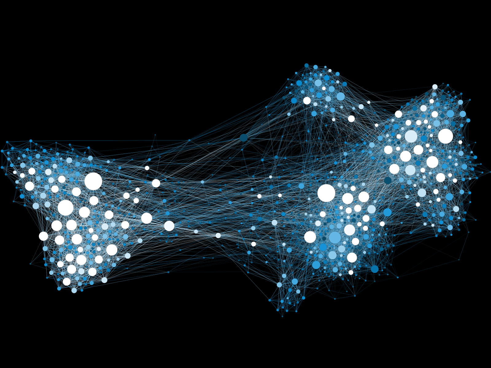
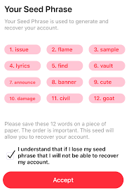

A
- ACINQ
-
ACINQ is a French company that develops Bitcoin and Lightning Network infrastructure, best known for creating the Phoenix mobile wallet and operating one of the largest Lightning routing nodes.
They also maintain Eclair, a Lightning implementation in Scala, and build tools to improve scalability and usability for Bitcoin payments.
- Airgapped
-
Keeping information from ever being connected to the internet.

- Algorithm
-
Step-by-step procedure for solving a problem or accomplishing some end.

Diagram showing what an algorithm means - Archival Node
-
In the context of Bitcoin, a "node" is a computer that participates in the Bitcoin network by validating transactions, maintaining a copy of the blockchain, and relaying information to other nodes. Nodes help ensure the integrity and security of the Bitcoin network by enforcing consensus rules and disseminating data across the network.
An archival node is a type of Bitcoin node that maintains the complete history of the blockchain. Unlike a full node, which may prune old blocks to save storage space, an archival node stores every block and transaction ever processed by the network, from the Genesis block to the most recent block.
Key Features:
- Comprehensive Data Storage: Stores all blocks and transactions, providing a complete and unaltered record of the entire blockchain history.
- Advanced Data Access: Optimized for querying and retrieving detailed historical data, making it valuable for research, compliance, and analytics.
- High Resource Requirements: Requires substantial storage capacity and computational resources to handle and maintain the extensive data.
Use Cases:
- Historical Analysis: Useful for detailed analysis and auditing of historical blockchain data.
- Data Services: Provides comprehensive data services for organizations needing full blockchain records for compliance or advanced analytics.
- Attack Vector
-
A method or pathway an attacker uses to exploit a systems weakness to gain unauthorized access, steal data, or disrupt operations.

- Austrian School of Economics
-
Economic school of thought that emphasizes individualism, free markets, and limited government intervention.
Methodological Individualism: Economic phenomena are the result of individual actions. Only individuals make choices, not groups or collectives.
Subjective Value Theory: Value is subjective and varies between individuals. It is determined by individual preferences rather than inherent in goods or services.
Marginal Utility: The value of a good or service is determined by its marginal utility, meaning the additional satisfaction gained from consuming an additional unit of that good.
Time Preference: Individuals prefer present consumption over future consumption, leading to the concept of interest as the price of time.
People generally prefer to have something now rather than later. This is because having something now allows them to use it immediately, which is often seen as more valuable than waiting.
For example, imagine someone offers you $100 today or $100 a year from now. Most people would choose the money today because they can use it right away, whether it's to buy something they want or invest it to make more money.
This preference for having things sooner rather than later is called "time preference." It's an important idea in economics because it helps explain why people are willing to pay interest on loans. When someone borrows money, they're essentially saying, "I value having this money now more than having to pay extra later."
Spontaneous Order: Markets create a spontaneous order, where the coordination of individual actions leads to an efficient allocation of resources without central planning.
Entrepreneurship: Entrepreneurs play a crucial role in driving economic progress through innovation, risk-taking, and responding to market signals.
Action Axiom: Human action is purposeful behavior aimed at achieving specific ends, implying that individuals make choices to maximize their utility.
Uncertainty and Knowledge: Economic decisions are made under uncertainty, and knowledge is dispersed and subjective, which makes central planning ineffective.
Critique of Empiricism and Formal Modeling: Austrian economics is skeptical of empirical and statistical methods in economics, emphasizing instead the importance of logical reasoning and a priori deduction from basic axioms.
B
- Backup
-
A copy of data that can be used to restore the original data after a data loss event.
Illustration of data backup - BIP39 PBKDF2
-
BIP39 uses PBKDF2 (a key-derivation function) to turn a seed phrase and optional passphrase into a master seed. It repeatedly hashes the inputs to slow down guessing attacks and to make small changes (like a different passphrase) produce a completely different master seed.
- Binary
-
A binary number is a number expressed in the base-2 numeral system, which uses only two symbols: typically 0 and 1. Each digit in a binary number is called a bit. This system is fundamental to the operation of computers and digital systems, as they use binary to perform all their computations and processing.
In the binary system, each bit represents a power of 2, with the rightmost bit representing 20, the next representing 21, then 22, and so on. For example, the binary number 1011 translates to the decimal number 11, calculated as follows:
Binary Calculation:
- 1 × 23 = 8
- 0 × 22 = 0
- 1 × 21 = 2
- 1 × 20 = 1
Adding these values together gives 8 + 0 + 2 + 1 = 11.
Binary numbers are essential in computing because they align well with digital electronics, which have two states (on and off, or 1 and 0). This makes binary an efficient and reliable system for representing data in digital devices.

Illustration of binary numbers - Base-2 Numeral System
-
A numeral system that represents numbers using only two symbols (0 and 1), commonly called binary.
- Bit
-
The smallest unit of information in computing, represented as 0 or 1.
- Binary Conversion to a Decimal Number
-
A binary conversion to a decimal number (i.e. a "normal" number that we are familiar with) is done by taking the sum of a sequence of numbers dictated by whether there is a 0 or 1 in a certain position of the binary.
The order of the binary dictates whether you multiply a 0 or 1 times 2ⁿ where n is based on the descending positional place of the 0 or 1 (starting at the total number of characters minus 1).
For example, 11100101001 can be converted to decimal by the following: (2¹⁰ x 1) + (2⁹ x 1) + (2⁸ x 1) + (2⁷ x 0) + (2⁶ x 0) + (2⁵ x 1) + (2⁴ x 0) + (2³ x 1) + (2² x 0) + (2¹ x 0) + (2⁰ x 1) = 1833
- Bitcoin Baselayer
-
Also often used synonymously with the term: Bitcoin Network
The term "bitcoin baselayer" refers to the fundamental protocol layer of the Bitcoin network, which includes the blockchain, the consensus rules, and the underlying network infrastructure. This layer is responsible for the core functionality of Bitcoin, such as:
- Transaction validation and transaction propagation: Ensuring that all transactions follow the consensus rules and are properly broadcast across the network.
- Block creation and mining: The process by which new blocks are created, validated, and added to the blockchain.
- Security and integrity: Maintaining the cryptographic security that ensures the integrity and immutability of the blockchain.
The baselayer is what provides Bitcoin its primary value propositions, such as decentralization, security, and censorship resistance.
- Bitcoin Consensus Rules
-
Bitcoin consensus rules are a set of predefined protocols that all nodes in the network must follow to agree on the validity of transactions and blocks. These rules ensure that transactions are legitimate, prevent double spending, and maintain the integrity of the blockchain. By adhering to these rules, nodes collectively agree on the state of the blockchain and secure the network against fraudulent activities.
- Block Size Limit: Each block in the blockchain must adhere to a maximum size limit, typically set at 1 MB, to prevent excessive block size and ensure network efficiency.
- Block Time: Blocks must be mined approximately every 10 minutes to maintain the stability of the block generation rate and overall network synchronization.
- Proof of Work: Miners must solve a complex cryptographic puzzle to add a new block to the blockchain, demonstrating computational effort and ensuring network security.
- Difficulty Adjustment: The network adjusts the mining difficulty approximately every two weeks (every 2016 blocks) to maintain the average block time around 10 minutes, balancing the rate of new block creation.
- Transaction Validation: Transactions must be valid according to specific rules, including proper digital signatures, correct input-output relationships, and adherence to Bitcoin's scripting language.
- Coinbase Transaction: Each block must include a special transaction called the coinbase transaction, which awards newly minted bitcoins and transaction fees to the miner.
- Double-Spending Prevention: Transactions must reference unspent outputs from previous transactions, ensuring that the same bitcoin cannot be spent more than once.
- Chain Length: The longest valid chain of blocks (the one with the most accumulated work) is considered the correct blockchain, and nodes follow this chain to maintain network consensus.
- Script Rules: Bitcoin transactions use a scripting language to define how the bitcoin can be spent. Scripts must adhere to specific rules to ensure proper validation and execution of transactions.
- Merkle Tree Structure: Transactions in a block must be organized into a Merkle tree, which ensures efficient and secure verification of transactions within the block.
- Bitcoin Core
-
Often used interchangeably with the term: Bitcoin Network
"Bitcoin Core" refers to the reference implementation of the Bitcoin protocol, which is the most widely used and well-known software client for interacting with the Bitcoin network. Bitcoin Core is an open-source project maintained by a community of developers and plays a critical role in the development and maintenance of the Bitcoin baselayer. Key aspects of Bitcoin Core include:
- Software implementation: Bitcoin Core is a full-node software that allows users to participate in the Bitcoin network by validating transactions and blocks, and relaying them to other nodes.
- Development and updates: Bitcoin Core is continuously updated and improved by developers to fix bugs, enhance security, and add new features while ensuring compatibility with the Bitcoin protocol.
- Wallet functionality: Bitcoin Core includes a built-in wallet for users to store, send, and receive Bitcoin.
In summary, the "bitcoin baselayer" is the foundational protocol and network infrastructure of Bitcoin, while "Bitcoin Core" is a specific implementation of that protocol in the form of a software client used to interact with the Bitcoin network.

Bitcoin network visualization 
Network visualization 2 - Bitcoin Mining
-
The process by which new Bitcoin transactions are verified and added to the blockchain. Miners repeatedly guess solutions to a cryptographic problem to create new blocks, securing the network against fraud and ensuring transaction integrity. This process consumes real-world energy, tying computational work to the value and content of the network. In return, miners are rewarded with newly minted Bitcoin and transaction fees.
- Bitcoin Network
-
Often used interchangeably with the term: Bitcoin Core
- Definition: The decentralized network of nodes and miners that operate according to the Bitcoin protocol.
- Functions
- Block
-
A block is a group of Bitcoin transactions that have been verified and added to the blockchain. Each block includes a reference (hash) to the previous block, forming a chronological chain. It also contains a timestamp, a proof of work, and a mining reward for the miner who created it. Blocks are the fundamental units that make up Bitcoin’s ledger.
- Block Creation
-
The process of assembling validated transactions into a block and adding it to the blockchain, typically through mining.
- Blockchain
-
In the context of Bitcoin, a blockchain is a decentralized, public ledger that records all Bitcoin transactions in a secure and transparent manner.
It consists of a series of blocks, each containing a list of transactions, a timestamp, and a unique cryptographic hash that links it to the previous block. This chain structure ensures the integrity of the data, as altering one block would require changing all subsequent blocks, which is computationally impractical.
Bitcoin's blockchain is maintained by a network of nodes and secured through a process called mining, which validates transactions and adds new blocks to the chain. As the backbone of Bitcoin, the blockchain provides trust and accountability without the need for a central authority.
- Bonds
-
Bonds are debt securities issued by governments or corporations to raise capital, where the issuer promises to pay back the principal amount along with interest at specified intervals. They offer a fixed income to investors and are generally considered lower-risk compared to stocks. Bond prices can fluctuate based on interest rates and credit quality of the issuer.
Example of a Real-World Bond
An example of a real-world bond is a U.S. Treasury bond. Here’s how the debt securities in it break down:
- Issuer: The U.S. government, which issues the bond to raise funds.
- Principal: The amount borrowed, typically $1,000 per bond, which is repaid at maturity.
- Coupon Rate: The fixed annual interest rate paid to bondholders, for example, 2% per year.
- Maturity Date: The date when the bond matures, and the principal is returned to the investor, such as 10 years from the issue date.
- Interest Payments: Semiannual payments made to bondholders based on the coupon rate, such as $10 every six months for a $1,000 bond with a 2% annual rate.
Why it Is Called a Bond
The term "bond" comes from the notion of a binding agreement or commitment. Historically, bonds were seen as contracts or bonds of debt, where the issuer committed to repaying borrowed funds with interest. This "bond" between the issuer and the investor was formalized through legal documents, reflecting the obligation to meet the debt service and principal repayment.
- Boom Bust
-
A cycle of economic expansion followed by a contraction, often referred to as a boom-and-bust cycle.
Austrian School of Economics and Boom-Bust Cycles
The concept of "boom and bust" cycles is most prominently associated with the Austrian School of Economics. Austrian economists argue that these cycles are primarily caused by artificial manipulation of interest rates and money supply by central banks. They believe that when central banks lower interest rates below their natural market level, it leads to excessive borrowing and investment, creating an economic "boom." However, this boom is unsustainable because it is not based on real savings or consumer demand. Eventually, the economy corrects itself, leading to a "bust," which is a period of recession or economic downturn.
This view contrasts with other economic schools, such as Keynesian economics, which tend to emphasize different causes and solutions for economic cycles.
Other Schools of Economics on Boom-Bust Cycles
- Keynesian Economics
- View on Boom and Bust: Keynesians recognize boom and bust cycles as part of the economic process but attribute them primarily to fluctuations in aggregate demand. During a boom, high demand leads to increased production, employment, and prices. Conversely, when demand falls, it leads to a bust, characterized by recession and unemployment.
- Policy Response: Keynesians advocate for active government intervention to smooth out these cycles, using fiscal policies (like government spending and tax adjustments) and monetary policies (like controlling interest rates) to stabilize the economy.
- Monetarist Economics
- View on Boom and Bust: Monetarists, associated with economists like Milton Friedman, believe that boom and bust cycles are primarily caused by mismanagement of the money supply. When central banks expand the money supply too rapidly, it can lead to a boom followed by a bust when the money supply contracts or is tightened.
- Policy Response: Monetarists argue for controlling the growth of the money supply to prevent these cycles, advocating for a steady, predictable increase in the money supply aligned with economic growth.
- Real Business Cycle (RBC) Theory
- View on Boom and Bust: The RBC school sees boom and bust cycles as natural responses to external shocks, like changes in technology or resource availability, rather than being driven primarily by monetary factors. These cycles are viewed as the economy's way of adjusting to new conditions.
- Policy Response: RBC theorists often argue against government intervention, believing that the economy will naturally adjust and return to equilibrium without the need for external interference.
- Post-Keynesian Economics
- View on Boom and Bust: Post-Keynesians emphasize financial instability and the role of speculative bubbles in causing boom and bust cycles. They argue that financial markets are inherently unstable and prone to cycles of excessive optimism (leading to booms) followed by panic and collapse (leading to busts).
- Policy Response: Post-Keynesians often advocate for stricter regulation of financial markets and greater emphasis on income distribution and economic stability measures to prevent such cycles.
- Neo-Classical Economics
- View on Boom and Bust: Neo-classical economists may acknowledge boom and bust cycles but tend to view them as anomalies or deviations from the market's natural equilibrium. They often emphasize the self-correcting nature of markets and the role of supply and demand in regulating economic activity.
- Policy Response: Many neo-classical economists prefer minimal government intervention, believing that market forces should be allowed to play out, though some acknowledge the need for stabilization policies in severe downturns.
- Keynesian Economics
C
- CEO
-
Chief Executive Officer, the highest-ranking individual in a company.
- Centralized
-
Controlled by a single authority or entity or a select group, often opposed to decentralization.
- Censorship
-
The act of forbidding or hindering the transfer of certain information.
- Chain-Analysis
-
Bitcoin chain analysis refers to the process of examining and interpreting the blockchain, the public ledger that records all Bitcoin transactions. This analysis involves tracking transaction flows, identifying patterns, and linking addresses to gain insights into user behavior.
- Checking Account
-
Checking accounts are highly liquid bank accounts used for daily transactions, such as paying bills, writing checks, and making debit card purchases. They typically do not earn interest but offer unlimited access to funds with no restrictions on the number of withdrawals or transfers.
- Checksum
-
A checksum is a small-sized block of data derived from another block of digital data for the purpose of detecting errors that may have been introduced during its transmission or storage. By themselves, checksums are often used to verify data integrity but are not relied upon to verify data authenticity.
Checksum Wikipedia entry - Cleopatra (program, not the queen)
-
Cleopatra is a program designed for managing cryptographic keys and certificates. It facilitates the generation, storage, and organization of keys used in encryption, decryption, and digital signatures, providing a centralized platform for securely handling cryptographic operations within an organization or for individual users.
Cleopatra Wikipedia entry - Cold Wallet / Cold Storage
-
A method of storing cryptocurrency offline to reduce the risk of hacking or theft.
- Consensus Rules
-
In Bitcoin, consensus rules are the strict protocol rules that all full nodes follow to agree on which transactions and blocks are valid. They define the core logic of Bitcoin — things like the block size limit, how new coins are created, and what makes a transaction valid. If a node breaks these rules, its version of the blockchain will be rejected by the rest of the network.
Some examples:
- Block size limit: A block can be at most 4 million weight units (roughly 1 MB before SegWit).
- Block reward schedule: The reward for mining a block halves every 210,000 blocks (~4 years).
- Proof of Work requirement: Each block must have a valid SHA-256 hash below the current difficulty target.
- Valid transaction structure: Transactions must have properly formatted inputs and outputs.
- No double spending: The same input cannot be spent twice.
- Signature verification: Every transaction must have valid cryptographic signatures proving ownership of the inputs.
- Coin supply cap: The total number of bitcoins that can ever exist is limited to 21 million.
- Sequence and timestamp rules: Blocks must reference the previous block and have valid timestamps.
Bitcoin’s consensus rules aren’t a simple numbered list — they are hundreds of precise conditions defined in the Bitcoin Core codebase. Each rule ensures that all nodes agree on which blocks and transactions are valid. These rules fall into several main categories:
- Block Rules: Define what makes a block valid. Examples include the maximum block size (4 million weight units), correct linkage to the previous block, valid timestamps, and a valid Merkle root.
- Transaction Rules: Specify what makes a transaction valid — such as properly formatted inputs and outputs, no double spending, and a valid structure for coinbase transactions.
- Script and Signature Rules: Govern how Bitcoin’s scripting language works. Every transaction input must have a valid script and signature proving ownership of the coins being spent.
- Proof-of-Work Rules: Ensure each block contains a SHA-256 hash below the current difficulty target, providing security through computational effort.
- Monetary Rules: Control Bitcoin’s supply and issuance — including the 21 million BTC cap and the halving of block rewards every 210,000 blocks.
- Sequence and Locktime Rules: Regulate when transactions or bloc
- Concept: Zoom Out
-
An approach to problem-solving that involves considering the broader context or larger picture.
Long-Term Perspective
- Technology and Adoption: Bitcoin is a decentralized ledger that records transactions securely.
- Value Proposition: As a "truth machine," it ensures transparency and immutability.
Key Attributes
- Decentralization: Operates without central authority, enhancing trust.
- Security: Uses cryptographic principles to secure data.
- Supply Cap: Fixed supply of 21 million bitcoins, providing scarcity.
Benefits of Zooming Out
- Innovation: Focus on technological advancements and increased adoption.
- Stability Over Time: Despite short-term fluctuations, long-term growth in user base and acceptance.
Historical Trends
- Adoption Curve: More individuals and institutions adopting Bitcoin over time.
- Utility and Use Cases: Growth in real-world applications, such as remittances and digital contracts.
By zooming out, you focus on Bitcoin's role as a transformative technology and its enduring significance as a decentralized ledger.
- Counter Party Risk
-
Counterparty risk is the risk that the other party in a financial transaction or contract will default on their obligations or fail to fulfill their end of the deal. This risk can arise in various financial contexts, including loans, derivatives, and trading activities, where the reliability of the counterparty affects the outcome of the transaction. Effective management of counterparty risk often involves assessing the creditworthiness of the counterparties, using collateral, and implementing risk mitigation strategies to reduce potential losses.
- Crypto Winter
-
A period of extended decline or stagnation in the cryptocurrency markets, often characterized by falling prices and decreased trading activity.
- Custodial Wallets
-
Wallets where the private keys are held by a third party, often an exchange or service provider.
D
- Salt
-
In cryptography, a salt is extra data mixed into a password or seed derivation process so the resulting output is unique even if the original words are the same. It helps prevent precomputed attacks and makes guessing much harder. In Bitcoin wallet recovery, a salt can also refer to an added secret value that changes the derived seed, which must be preserved for recovery.
- Decentralized
-
Not controlled by a single entity or authority, often distributed across a network of nodes or participants.
- Decentralization
-
The distribution of control or authority across many independent participants instead of a single central entity.
- Decoy-Wallets
-
Wallets with varying amounts of Bitcoin on them to make an attacker believe the theft has been successful in that it stole most of the Bitcoiners' money. The way a decoy wallet is set up can greatly vary depending on your situation. There could be multiple decoy-wallets or just one very believable one.
- You own 0.5 Bitcoin which equals 50,000,000 Satoshis. Your setup could be as
follows:
- 200,000 Satoshis for everyday use, when going shopping and eating out.
- 5,000,000 Satoshis in an intermediary wallet at home which you use for larger purchases online or offline.
- 40,000,000 Satoshis in Cold Storage to only use for very large purchases.
- 4,800,000 Satoshis in a decoy-wallet so you could either hand it to an attacker upon being blackmailed or have them find it more easily if they were to go for theft by home invasion.
- You own 0.5 Bitcoin which equals 50,000,000 Satoshis. Your setup could be as
follows:
- Deflation
-
Bitcoin has a capped supply of 21 million and a predictable issuance policy. Over time, the amount of new BTC entering the market decreases because finding new blocks becomes harder as built into the system with the difficulty adjustment mechanism. This makes the total monetary supply of Bitcoin effectively shrink.
This happens for several reasons. As mentioned, the flow of new BTC into the market gets smaller but the user base continues to grow, making new coins even scarcer.
In addition, whenever BTC keys are lost — for example, if someone forgets them or dies without passing them on — those coins become permanently inaccessible. This further reduces the supply of available BTC.
- Diamond Hands
-
"Diamond hands" in the context of Bitcoin market participants refer to individuals who exhibit strong conviction and resolve in holding onto their Bitcoin investments despite market volatility or price fluctuations, often with a long-term investment horizon. These participants are characterized by their unwavering commitment to their investment strategy and are less likely to sell during times of uncertainty or downturns in the market.
- Difficulty Adjustment
-
The difficulty adjustment is the process by which the Bitcoin network automatically changes how hard it is to find a new block. This happens every 2,016 blocks (about every two weeks). If blocks were found too quickly in the previous period, the difficulty increases; if too slowly, it decreases. This keeps the average time between blocks close to 10 minutes, regardless of how much computing power (hashrate) is on the network.
- Double spending
-
Double spending is a potential issue in digital currencies, like Bitcoin, where a single unit of currency could theoretically be spent more than once. This problem arises because digital information can be easily copied, so without proper safeguards, a user could attempt to send the same Bitcoin to multiple recipients.
How Double Spending Works
In traditional financial systems, intermediaries like banks prevent double spending by verifying transactions. However, Bitcoin is decentralized and lacks a central authority, so it uses a different mechanism to prevent this issue.
Bitcoin’s Solution to Double Spending: The Blockchain
Bitcoin solves the double spending problem using a decentralized ledger called the blockchain. Here’s how it works:
- Transaction Broadcast: When a Bitcoin transaction is made, it is broadcast to the entire network of nodes (computers) participating in the Bitcoin network.
- Transaction Verification: Miners (nodes that validate transactions) gather unconfirmed transactions from the network into a block. Each miner competes to solve a complex cryptographic puzzle, and the first to solve it gets to add their block of transactions to the blockchain.
- Blockchain Confirmation: Once a block is added to the blockchain, the transactions within that block are considered confirmed. The blockchain is a chain of blocks, each containing a set of transactions. Because each block is cryptographically linked to the previous one, altering any transaction would require re-mining all subsequent blocks, which is computationally impractical.
- Consensus Mechanism: The Bitcoin network operates on a consensus mechanism, where the longest valid blockchain (the one with the most computational work) is considered the true record of transactions. If someone tries to double spend by sending the same Bitcoin in two different transactions, only one of those transactions can be confirmed and included in the blockchain. The other will be rejected by the network.
- Preventing Double Spending: Once a transaction is included in the blockchain and several more blocks have been added on top of it, the transaction is considered increasingly secure. This makes it nearly impossible for a double spend to occur because the effort required to reverse a transaction increases exponentially as more blocks are added.
Example of Double Spending Attempt
- Scenario: A user sends 1 Bitcoin to both Merchant A and Merchant B.
- Process: Both transactions are broadcast to the network, but only one can be confirmed first and included in the blockchain.
- Result: The transaction included in the blockchain first becomes the valid transaction, and the other is invalidated. If the user tries to double spend, the network will recognize the attempt and reject the second transaction.
Importance in Bitcoin
Preventing double spending is crucial for the integrity and trustworthiness of Bitcoin as a currency. Without this protection, users could undermine the currency’s value by duplicating their spending, leading to inflation and loss of confidence in the system. The blockchain and its consensus mechanism ensure that once a transaction is confirmed, it is final and cannot be reversed or duplicated, maintaining the currency's security and reliability.
- Dust
-
Bitcoin dust refers to a very small amount of Bitcoin that is usually so tiny that it is economically impractical to spend. This is because the transaction fees required to transfer these tiny amounts are higher than the value of the dust itself. In technical terms, dust is an amount of Bitcoin that is lower than the minimum transaction fee required to process a transaction on the Bitcoin network.
Key Points About Bitcoin Dust
Definition and Threshold
Bitcoin dust is typically considered any amount of Bitcoin that is smaller than the minimum output threshold. This threshold is generally determined by the transaction fee requirements and can vary based on current network conditions.
Economic Infeasibility
The primary issue with Bitcoin dust is that the cost to send these small amounts is greater than the value being transferred. For example, if you have 0.00000001 BTC (1 satoshi) and the fee to send a transaction is 0.0001 BTC, it makes no sense to transfer it because the fee far exceeds the value of the dust.
Source of Dust
Dust can accumulate in a user's wallet from various sources, such as leftover change from transactions or from microtransactions that were once economically viable but are no longer due to increased transaction fees.
Dust Limit
Bitcoin nodes have a predefined dust limit, which is a value below which outputs are considered dust. As of recent updates, this limit is typically around 546 satoshis for standard transactions (this value can change based on network policies and updates).
Implications for Users
Having dust in your wallet can lead to inefficiencies. It can clutter a wallet, making it harder to manage, and potentially increasing the size and complexity of future transactions if many dust outputs are combined.
Consolidation
Users can consolidate dust by combining multiple small outputs into a single, larger output when the network fees are low. This process helps in cleaning up the wallet and reducing the number of tiny, unspendable amounts.
Example Scenario
Imagine you receive 1000 satoshis (0.00001 BTC) from a transaction. If the fee to send a transaction is 2000 satoshis (0.00002 BTC), you effectively cannot spend the 1000 satoshis without incurring a loss, as the fee is higher than the amount you want to send. Thus, this 1000 satoshis becomes "dust" in your wallet.
- Digital
-
Relating to or using technology that operates on digital data, often in the form of binary code (0s and 1s).
- Divisible
-
Capable of being divided into smaller parts or units, often used to describe the divisibility of a currency or asset.
- Distributed Ledger
-
The distributed ledger in the context of Bitcoin is a decentralized database that records all transactions and balances across the entire network. It is maintained by a network of interconnected nodes, ensuring transparency, immutability, and security without the need for a central authority.
E
- ECDSA (Elliptic Curve Digital Signature Algorithm)
-
A cryptographic algorithm used to create digital signatures in Bitcoin and other cryptocurrencies.
- EMT
-
Efficient Market Hypothesis, a theory that asserts that financial markets efficiently incorporate and reflect all relevant information.
> - Encryption
-
The process of encoding information in such a way that only authorized parties can access it, often using cryptographic techniques.
- Entropy
-
In the context of encryption, entropy refers to the randomness and unpredictability of a cryptographic key or data, which determines its resistance to being guessed or brute-forced. Higher entropy means more possible combinations and greater security, as it becomes more difficult for an attacker to predict the key. Therefore, a system with high entropy is crucial for ensuring strong encryption and safeguarding sensitive information.
- Equities
-
Equities, also known as stocks, represent ownership shares in a company, giving shareholders a claim on the company's assets and earnings. They can provide returns through capital appreciation (an increase in the stock price) and dividends (periodic payments made to shareholders). Equities are traded on stock exchanges and are subject to market fluctuations, offering both the potential for high returns and the risk of significant losses.
- Escrow
-
Escrow is a financial arrangement where a third party holds and manages funds or assets on behalf of two other parties until certain conditions are met. It protects both the buyer and seller by ensuring that money or goods are only released when all agreed terms are fulfilled. Escrow is commonly used in real estate, online transactions, and large deals to build trust and prevent fraud.
In the context of RoboSats, escrow means that when two people trade Bitcoin peer-to-peer, the Bitcoin is temporarily locked in a multisig smart contract so the seller can’t run away with the money after the buyer pays. The smart contract holds the Bitcoin safely until the buyer’s fiat payment is confirmed. Once both sides complete their part, the smart contract automatically releases the Bitcoin to the buyer.
- Exchange
-
A platform or service where cryptocurrencies can be traded or exchanged for other assets or currencies.
F
- Fiat Money
-
A government-issued currency that is not backed by a physical commodity such as gold or silver.
Like your five:
Imagine you have a toy store where you trade toys for shiny stickers. But instead of using stickers, let's pretend you use special colorful papers with numbers printed on them. These papers are called money. Now, there are different kinds of money.
Fiat money is like the colorful papers with numbers printed on them that everyone agrees have value. But here's the thing: these papers aren't valuable because they're made of something special like gold or silver. They're valuable simply because people believe they are.
So, just like when you and your friends agree that your shiny stickers are valuable, everyone in the country agrees that these colorful papers called fiat money can be used to buy things. It's like a big game where everyone follows the same rules, and these papers help us trade toys and other things we want!
- Five Dollar Wrench Attack
- A form of physical coercion or extortion where an attacker threatens violence or harm unless the victim provides access to their cryptocurrency holdings or private keys.
- Federally Insured
-
Deposits protected by government-backed insurance up to specified limits.
- Flash memory
-
Flash memory is a type of non-volatile memory, meaning it retains data even when power is turned off. It stores data using electrical charges in memory cells, allowing for fast access speeds, low power consumption, and high durability.
Flash memory is commonly used in: SSDs (Solid State Drives), USB flash drives, SD cards, Smartphones and tablets.
Unlike traditional hard drives that rely on spinning magnetic disks and moving read/write heads, flash memory has no moving parts, which contributes to its speed and reliability.
- FOSS (Free Open Source Software)
- Software that is released with a license that allows users to view, modify, and distribute the source code freely.
- Freedom
- The state of being free from constraints or limitations, often associated with personal liberty or autonomy.
- Free Market
-
A free market is an economic system where prices for goods and services are determined by open competition and voluntary exchanges between individuals, without government intervention. In a free market, businesses and consumers are free to make their own decisions regarding production, consumption, and investment. The forces of supply and demand naturally regulate the market, leading to efficient allocation of resources.
Government Intervention and the Absence of a Free Market
- Monetary Policy and Interest Rates: Central banks, like the Federal Reserve, manipulate interest rates through monetary policy. This intervention distorts the natural market rate of interest, which would otherwise be determined by supply and demand for money in a free market.
- Quantitative Easing and Money Supply: Central banks increase the money supply through policies like quantitative easing. This artificial injection of money can lead to asset bubbles and inflation, distorting price signals that would otherwise guide market participants in a free market.
- Regulation of Industries: Government regulations impose restrictions on businesses, dictating how they can operate. These rules often limit competition and innovation, preventing a truly free market where businesses can respond freely to consumer demand.
- Subsidies and Bailouts: Governments provide subsidies to certain industries or bail out failing businesses, disrupting the natural competitive process. In a free market, inefficient businesses would fail, allowing resources to be reallocated to more productive uses.
- Taxes and Tariffs: Governments impose taxes and tariffs that influence business decisions and consumer behavior. These interventions distort the allocation of resources, as businesses and consumers are forced to respond to government-imposed costs rather than market conditions.
- Price Controls: Government-imposed price controls, such as minimum wage laws or rent caps, interfere with the natural price-setting mechanism of the market. In a free market, prices are determined by the balance of supply and demand, reflecting the true value of goods and services.
- Legal Tender Laws: Governments mandate the use of fiat currency as legal tender, preventing the use of alternative currencies or barter systems. This limits the freedom of individuals to engage in voluntary exchanges using the medium of exchange they prefer.
- Centralized Economic Planning: Governments engage in economic planning and intervention, deciding which industries to promote or restrict. This top-down approach disrupts the decentralized decision-making process that characterizes a free market, where individual choices drive economic outcomes.
- Government Monopolies: In some sectors, governments establish or maintain monopolies, preventing competition. In a free market, monopolies would only persist if they were the most efficient and competitive option, not because of government protection.
- Barriers to Entry: Regulations, licensing requirements, and other government-imposed barriers make it difficult for new businesses to enter the market. A truly free market would allow for easy entry and exit, fostering competition and innovation.
- Fractal
-
Dictionary.com Definition:
noun
1. Mathematics, Physics. an irregular geometric structure that cannot be described by classical geometry because magnification of the structure reveals repeated patterns of similarly irregular, but progressively smaller, dimensions: fractals are especially apparent in natural forms and phenomena because the geometric properties of the physical world are largely abstract, as with clouds, crystals, tree bark, or the path of lightning.

2. Architecture, Decorative Art. a design or construction that uses the concept and mechanics of fractal geometry: Fractals distinguish the facade of the library, revealing recursive patterns, the smaller parts mirroring the larger parts.
adjective
1. Mathematics, Physics. of or relating to a fractal: fractal geometry; fractal dimensions; fractal curves.
2. Architecture, Decorative Art. of or relating to a design or construction that uses the concept and mechanics of fractal geometry: The progression of forms from distant view to excruciating detail is born of the fractal composition that brands her work.
Word History and Origins
First recorded in 1975-80; from French fractale, equivalent to Latin frāct(us) “broken, uneven” + -ale; fractus -al 2; term introduced by French mathematician Benoit Mandelbrot (1924-2010) in 1975
- Minted
-
Newly created coins issued by the protocol, typically as part of a block reward.
- Full Node
-
Definition
A full node is a type of node in the Bitcoin network that fully participates in the Bitcoin protocol by performing several critical functions to maintain the integrity and security of the network. It downloads and verifies the entire blockchain, from the genesis block to the most recent block, and ensures compliance with the Bitcoin protocol rules.
Key Functions
- Blockchain Validation
- Complete Download: A full node downloads and stores the entire blockchain, including all blocks and transactions.
- Verification: It validates all transactions and blocks against the consensus rules of the Bitcoin protocol, ensuring that all transactions are legitimate and that no double-spending has occurred.
- Transaction Relay
- Propagation: Full nodes relay transactions and blocks to other nodes in the network, helping to propagate new transactions and blocks throughout the Bitcoin network.
- Network Security
- Enforcement of Rules: By validating every transaction and block, full nodes enforce the network's consensus rules, helping to secure the network against fraudulent activities and attacks.
- Data Storage
- Complete History: Full nodes maintain a complete record of the blockchain, which includes every transaction ever processed. This allows full nodes to provide a complete and accurate history of Bitcoin transactions.
Subtypes
- Pruned Full Node
- Description: A pruned full node keeps only a subset of the blockchain data, specifically recent blocks and transactions. It does not retain the entire blockchain history, which reduces storage requirements while still validating and relaying transactions.
- Non-Pruned Full Node
- Description: Also known as a standard full node, it retains the entire blockchain history. This type of node provides the most complete data and supports various advanced features, such as historical data analysis and data recovery.
Benefits
- Network Integrity: Full nodes help maintain the integrity and security of the Bitcoin network by validating all transactions and blocks.
- Decentralization: They contribute to the decentralized nature of Bitcoin by distributing the blockchain data across many independent nodes.
- Data Availability: Full nodes provide complete access to the blockchain history, which can be valuable for auditing, research, and analysis.
Summary
In summary, a full node in the Bitcoin network is a crucial component that downloads, validates, and stores the entire blockchain. It plays a vital role in maintaining network security, enforcing protocol rules, and ensuring the decentralized and reliable operation of the Bitcoin network.
- Blockchain Validation
- Fungibility
-
In the context of Bitcoin, gold, and fiat currency, fungibility refers to the property of an asset whereby individual units are interchangeable and indistinguishable from one another.
Explanation:
Bitcoin:
Fungibility: Ideally, each Bitcoin should be identical in value and usability, meaning that one Bitcoin is the same as any other Bitcoin. However, in practice, Bitcoin's fungibility can be affected by its transaction history. For example, some Bitcoins may be considered "tainted" if they have been used in illegal activities, leading to certain platforms or individuals refusing to accept them. This can challenge Bitcoin's fungibility.
Gold:
Fungibility: Gold is generally considered highly fungible. One ounce of gold of a certain purity is identical in value and function to any other ounce of gold of the same purity, regardless of its form (coins, bars, etc.) or origin. This makes gold a standard for trade and storage of value.
Fiat Currency:
Fungibility: Fiat currency, like the US dollar or the Euro, is also considered fungible. Each unit of currency (e.g., a $20 bill) is generally accepted as equal to any other unit of the same denomination. This interchangeability is fundamental to its function as a medium of exchange.
Summary:
Fungibility ensures that units of an asset can be exchanged freely without consideration of the individual unit's history or form. This is crucial for the asset to function effectively as a medium of exchange or store of value.
G
- Genesis Block
-
The first block in a blockchain, often hardcoded into the protocol and serving as the foundation of the entire blockchain system.
Genesis Block: The Genesis Block is the very first Bitcoin block (block 0) and is hardcoded into the system. This means it is manually embedded in the Bitcoin Core software and not discovered or downloaded from the network. Every node starts with this block already in place. It has no previous block to reference, and its data (timestamp, transactions, hash, etc.) is fixed, providing the common starting point for the entire blockchain.
- Guessing Attacks
-
Attempts to discover secrets like passwords or seeds by systematically trying many possibilities.
- GPG key
-
Integrity with SHASUMs: SHASUMs are cryptographic hash functions that generate a fixed-size string unique to a file's content. By comparing the provided SHASUM with the one generated from the downloaded file, users can verify that the file has not been altered or corrupted during transfer.
Authenticity with PGP Keys: PGP keys are used for creating and verifying digital signatures. When a file is signed with a PGP private key, users can use the corresponding public key to verify that the file indeed comes from the stated source, ensuring the authenticity of the file.
Complementary Security: Combining SHASUMs and PGP signatures offers comprehensive security: SHASUMs ensure the file's integrity, while PGP signatures confirm the file's origin and authenticity. This dual-layer approach protects against both tampering and impersonation.
User Verification: Users can independently verify the SHASUMs by generating the hash of the downloaded file and comparing it with the provided SHASUM. Similarly, they can verify the PGP signature using the public key to ensure it matches the signed file.
Trust and Reliability: Providing both methods increases user trust and reliability in the distribution process. If either verification method is compromised, the other still offers a level of security, making it significantly harder for malicious actors to distribute tampered or fraudulent files.
H
- Hal Finney
-
A computer scientist and early cypherpunk who was involved in the development of Bitcoin and received the first-ever Bitcoin transaction from Satoshi Nakamoto.
- Hardware Wallet
-
A physical device that securely stores cryptocurrency private keys offline, providing enhanced security compared to software wallets.
- hash
-
Chat GPT explanation for kids:
Imagine you have a magical machine called a "hash machine." You can put anything you want into this machine—like a toy, a piece of candy, or even a note with some words on it. When you put something in, the machine gives you a special secret code, kind of like a super-secret password.
Unique Code: If you put the same thing into the machine again, you'll always get the exact same secret code. But if you put something even a tiny bit different in, like changing one word on your note, you'll get a completely different code.
One-Way Machine: Once you have your secret code, you can't use it to figure out what you originally put into the machine. It's like a one-way street—things can go in, but they can't come out.
Fast and Consistent: No matter how big or small the thing you put into the machine is, the secret code it gives you is always the same size. And the machine works really fast!
Cryptographic hashes are like those secret codes. They’re used to keep things safe and secure, like hiding your passwords or making sure your messages haven't been changed by anyone else. So, just like your magical hash machine, they help protect secrets and keep things safe!

- hashrate
-
The hashrate refers to the total computational power used by miners in the proof-of-work process. A higher hashrate indicates a more secure network, as it becomes more difficult for malicious actors to manipulate the blockchain.
- Hermann Hoppe
-
An Austrian economist and libertarian philosopher known for his work on democracy, ethics, and economics, including his critique of democracy and advocacy for private law societies.
- HODL
-
An intentional misspelling of "hold" that originated in the cryptocurrency community to encourage holding onto assets rather than selling them, especially during market downturns. Sometimes read as "Hold on for dear life".
- HODLER
-
A Bitcoiner who HODLs. Hold on for dear life.
- "You really won't let go of those Satoshis, will you? Even though Blackrock is buying at 70k?" - "Yes, I'm a HODLER, not a fool."
- Hot Wallet
-
A cryptocurrency wallet that is connected to the internet and used for storing assets that are actively traded or accessed frequently.
I
- Internet
-
Key Protocols That Make Up the Internet
- Transmission Control Protocol (TCP): Ensures reliable, ordered, and error-checked delivery of data between applications over the internet by breaking data into packets and reassembling them at the destination.
- Internet Protocol (IP): Handles addressing and routing of data packets so they can travel across networks and reach the correct destination. IP assigns unique addresses to devices on the network.
- Hypertext Transfer Protocol (HTTP): Facilitates the transfer of web pages and content from web servers to browsers. HTTP defines how messages are formatted and transmitted, and how web servers and browsers should respond to various commands.
- Hypertext Transfer Protocol Secure (HTTPS): An extension of HTTP that provides secure communication over the internet by encrypting the data exchanged between web servers and browsers using Transport Layer Security (TLS) or Secure Sockets Layer (SSL).
- File Transfer Protocol (FTP): Allows for the transfer of files between a client and a server over the internet. FTP supports uploading and downloading files and managing file directories on a remote server.
- Post Office Protocol (POP3): Used by email clients to retrieve emails from a server. POP3 downloads emails from the server to the client's device and usually removes them from the server.
- Internet Message Access Protocol (IMAP): Provides email retrieval and management by allowing clients to access and organize emails stored on a server without removing them. IMAP synchronizes emails across multiple devices.
- Dynamic Host Configuration Protocol (DHCP): Automatically assigns IP addresses and other network configuration details to devices on a network, allowing them to communicate effectively.
- Domain Name System (DNS): Translates human-readable domain names (like www.example.com) into IP addresses that computers use to identify each other on the network.
- Simple Mail Transfer Protocol (SMTP): Governs the sending of email messages from a client to a server and between servers. SMTP is used to relay and deliver outgoing emails.
- Immutability
-
The property of data being very difficult to alter once recorded.
- IP Address
-
A numerical label assigned to a device on a network that identifies it and helps route traffic (e.g., IPv4 or IPv6).
- Interest Rates
-
The cost of borrowing money or the return on savings, typically expressed as a percentage per year.
- ISP - Internet Service Provider
-
An Internet Service Provider — the company that provides you with internet access. They assign your IP address and can see metadata about your online activity, such as which servers you connect to.
J
K
- Keynsian Economics
-
An economic theory that advocates for government intervention in the economy to promote economic stability and growth.
- Key-Derivation Function
-
A function that turns input like a password or seed into a cryptographic key, typically using hashing and many iterations to resist guessing attacks.
L
- Ledger
-
A record of transactions or balances, traditionally kept in a book or, in Bitcoin, in a shared digital system.
- Liquid Assets
-
Assets that can be quickly converted to cash with minimal loss in value.
- Liquidity
-
Banking & finance: The ease of converting an asset to cash without a large price impact.
Lightning channels: The available inbound and outbound channel capacity that determines whether payments can be sent or routed.
- Lightning Network
-
A second-layer solution for Bitcoin that enables fast and scalable off-chain transactions.
- Off-Chain Transactions: Transactions occur off-chain, reducing the load on the main Bitcoin blockchain.
- Payment Channels: Users can open payment channels with each other, enabling multiple transactions to be conducted privately and quickly without broadcasting each one to the entire network.
- Micropayments: Allows for microtransactions, which are impractical on the base layer due to higher fees and slower confirmation times.
- Lightning Node
-
A lightning node is a type of node in the Bitcoin Lightning Network, which is a second-layer solution designed to enable faster and cheaper transactions off-chain. Here's an overview of its functions:
Key Functions
- Channel Management: Lightning nodes create and manage payment channels, which are off-chain channels used to facilitate rapid and low-cost transactions between users.
- Transaction Routing: These nodes route payments through the Lightning Network, allowing users to send and receive Bitcoin transactions instantly and with minimal fees.
- Network Connectivity: Lightning nodes maintain connections with other nodes in the network to facilitate payments and update channel states.
Benefits
- Speed: Lightning nodes enable near-instantaneous transactions by settling payments off-chain.
- Low Fees: Transactions routed through the Lightning Network incur lower fees compared to on-chain transactions.
- Lightweight SPV node
-
A Lightweight Node, also known as an SPV (Simplified Payment Verification) Node, is a type of Bitcoin node that operates with minimal resource requirements. Unlike full nodes, SPV nodes do not download and validate the entire blockchain. Instead, they rely on other full nodes to validate transactions and blocks.
Key Features of an SPV Node:
- Efficiency: SPV nodes are designed to be lightweight and require much less storage and computational power compared to full nodes. This makes them suitable for devices with limited resources, such as mobile phones.
- Partial Blockchain Download: SPV nodes only download the block headers (about 80 bytes each) instead of full blocks, which contain all the transactions. This drastically reduces the amount of data that needs to be downloaded and stored.
- Reliance on Full Nodes: Since SPV nodes do not fully validate transactions, they rely on full nodes to ensure that transactions are valid. They query full nodes for transaction inclusion in blocks and use Merkle proofs to verify that a transaction has been included in a block without needing the entire block data.
- Privacy Trade-offs: While SPV nodes provide a more accessible way to interact with the Bitcoin network, they do so at the cost of some privacy and security. SPV nodes must trust the full nodes they connect to, which can lead to potential vulnerabilities or privacy concerns if those full nodes are malicious or compromised.
Use Cases:
- Mobile Wallets: Many mobile Bitcoin wallets use SPV because it allows users to quickly and efficiently verify transactions without needing the resources of a full node.
- Resource-limited Environments: Devices with limited processing power, storage, or bandwidth, like IoT devices, can use SPV nodes to interact with the Bitcoin network.
How SPV Works:
- An SPV node starts by downloading the block headers from the longest chain.
- When the user wants to check if a transaction has been included in the blockchain, the SPV node queries full nodes for the relevant block header and the Merkle branch of the transaction.
- The node uses the Merkle proof to verify that the transaction is part of the block, ensuring that it has been confirmed without needing to download the full block.
In summary, an SPV node is a lightweight way to interact with the Bitcoin network, offering efficiency and accessibility at the cost of some security and privacy. It is a popular choice for mobile wallets and other resource-constrained environments.
- Scalability
-
The ability of a system to handle more users or transactions without degrading performance.
- Listening Node
-
A listening node is a Bitcoin node configured to accept incoming connections from other nodes. It plays a role in the network by facilitating communication and data propagation. Here’s what you need to know:
Key Functions
- Connection Acceptance: Listening nodes are configured to accept incoming connections from other nodes, allowing them to participate actively in the Bitcoin network.
- Data Propagation: They help propagate transactions and blocks throughout the network by relaying data to and from connected peers.
- Network Synchronization: Listening nodes synchronize with other nodes to stay updated with the latest blockchain data and network changes.
Benefits
- Enhanced Connectivity: By accepting incoming connections, listening nodes improve network connectivity and data distribution.
- Network Robustness: They contribute to the overall robustness and reliability of the Bitcoin network by ensuring better data propagation and connectivity.
M
- Market-Determined Money
-
A form of money whose value is determined by market forces such as supply and demand, as opposed to being fixed or regulated by a central authority.
- Merkle Tree
-
What is a Merkle Tree?
A Merkle tree, also known as a hash tree, is a data structure used in computer science and cryptography to efficiently and securely verify the integrity of large sets of data.
- Structure: A Merkle tree is a binary tree where each leaf node represents a hash of a piece of data (e.g., a transaction). Non-leaf nodes are hashes of their child nodes, with the root node being the hash of all other hashes in the tree.
- Purpose: It allows for the efficient and secure verification of data integrity. By comparing the root hash of the tree, one can verify that data has not been altered, even if the data is distributed or spread across different locations.
- Usage in Bitcoin: In Bitcoin, Merkle trees are used to organize transactions within a block. The Merkle root, which is the top hash of the tree, is included in the block header. This enables efficient and secure verification of transactions, as changes to any transaction would alter the Merkle root, signaling tampering or data corruption.
See Keifer Kifs' explanation of a Merkle Tree:
Video explanation - Metadata
-
Data about data — information that describes your activity, like timestamps, IP addresses, device type, or connection details, without showing the actual content.
- Michael Saylor
-
The CEO of MicroStrategy, a publicly-traded business intelligence company, known for his strong support of Bitcoin.
- Master Seed
-
The root secret derived from a seed phrase and optional passphrase that is used to generate wallet keys.
- Mining Reward
-
The newly created coins and transaction fees awarded to a miner for producing a valid block.
- Miner
-
An individual or entity that validates and processes transactions on a blockchain network.
- Mining Node
-
A mining node is a type of Bitcoin full node that participates in the process of mining new blocks. Mining involves solving complex mathematical problems to validate transactions and add them to the blockchain. Here are the key aspects of a mining node:
Key Functions
- Block Mining: Mining nodes compete to solve cryptographic puzzles in order to create new blocks. The first node to solve the puzzle gets to add the block to the blockchain and is rewarded with newly minted bitcoins and transaction fees.
- Transaction Validation: Mining nodes validate transactions before including them in new blocks, ensuring that they adhere to Bitcoin's consensus rules.
- Network Participation: These nodes contribute to network security and stability by continuously working to solve puzzles and add blocks.
Benefits
- Rewards: Miners receive block rewards and transaction fees as compensation for their computational efforts.
- Network Security: By participating in mining, nodes help secure the Bitcoin network against attacks and double-spending.
- Mnemonic
-
1. A mnemonic is a tool, such as a pattern of letters, ideas, or associations, used to aid in remembering information.
2. A mnemonic is a device or technique used to aid memory retention and recall. It often involves creating associations between easily remembered elements and the information being learned, such as acronyms, rhymes, or visual imagery. For example, the phrase "Every Good Boy Deserves Fruit" helps music students remember the notes on the lines of the treble clef (E, G, B, D, F).
- Mnemonic Seedphrase
-
The seed phrase is considered "mnemonic" because it uses a sequence of easily remembered words to help users recall and reconstruct the complex cryptographic key necessary to access their cryptocurrency wallet. The key is in binary (1s and 0s) and can be displayed with a set of letters and numbers, a QR code or as a sequence of words - a seedphrase.


- M2 Liquidity
-
Monetary M2 liquidity refers to a measure of the money supply that includes both physical cash and easily accessible deposits (like checking and savings accounts), as well as near-money assets like money market funds and time deposits. It represents the portion of money supply that can quickly be converted into cash or used for spending, thus indicating the overall liquidity available in an economy. M2 is a key indicator for central banks and economists to assess inflation potential and economic activity.
- Money Market Funds
-
Money market funds are mutual funds that invest in short-term, low-risk financial instruments like Treasury bills, certificates of deposit, and commercial paper. They offer higher liquidity than other investments and usually provide better returns than regular savings accounts, though they are not federally insured.
- Money Printing
-
The process by which a government or central bank increases the money supply by creating new currency or digital money.
- Money Supply
-
The total amount of money in circulation within a particular economy, including physical currency, digital money, and other liquid assets.
- Multi Signature aka Multisig, Multi-Sig, multisig
-
This is a Bitcoin feature that requires multiple signatures to authorize a transaction, adding an extra layer of security. This means that multiple private keys, held by different parties or devices, must agree to the transaction before it can be executed on the blockchain.
- Mutual Fund
-
A mutual fund is a pooled investment vehicle where multiple investors contribute money, which is then managed by a professional to invest in a diversified portfolio of assets like stocks, bonds, or other securities. It allows individual investors to gain exposure to a broad range of assets with relatively low minimum investment requirements, spreading risk across the portfolio. Investors must trust the professional manager, face significant third-party risk, and typically have only peripheral information about the companies and assets being invested in.
N
- Node
-
A computer or device on a blockchain network that participates in maintaining the network by validating and relaying transactions.
- Non-Custodial Wallets
-
Cryptocurrency wallets where the user retains full control and ownership of their private keys.
O
- OPSEC
-
Operational Security, the process of identifying and mitigating risks to maintain confidentiality, integrity, and availability of sensitive information and operations.
- OS (Operating System)
-
The software that manages computer hardware and provides common services for computer programs.
P
- Paper Hands
-
In the context of Bitcoin market participants, "paper hands" refers to individuals who are quick to sell their Bitcoin holdings during periods of market volatility or price drops due to fear or uncertainty, often resulting in short-term losses. These participants lack the conviction or patience to hold onto their investments through market fluctuations, contrasting with "diamond hands" who exhibit strong resolve and are willing to endure volatility for long-term gains.
- Passphrase
-
An optional secret added to a seed phrase to create a different master seed.
- Protocol Layer
-
A logical layer in a system stack that defines rules for how data is formatted and exchanged.
- Peer-to-peer
-
A decentralized communication model where two or more parties interact directly with each other without the need for intermediaries.
- Pleb
-
Colloquial term used in the cryptocurrency community to refer to inexperienced or amateur investors or traders.
- Power Projection
-
Power Projection refers to a nation's ability to influence or control events in other regions using military or economic strength. It encompasses deploying forces, demonstrating military capabilities, and exerting influence to deter aggression and support allies. This concept highlights the importance of maintaining a global presence and readiness to project strength when needed.
Physical Power Projection
Physical Power Projection involves using tangible military assets to assert influence globally. This includes:
- Military Bases: Establishing and maintaining bases worldwide to enhance strategic reach.
- Naval Fleets: Deploying ships to key regions to project maritime strength.
- Air Power: Utilizing aircraft for rapid deployment and support operations.
- Ground Forces: Positioning troops in strategic locations to provide stability and deterrence.
These measures ensure a nation can respond swiftly to threats and maintain its geopolitical interests.
Power Projection in the Bitcoin Network
Power Projection in the Bitcoin Network involves utilizing computational resources to secure the blockchain. This is a form of physical power digitally stored:
- Mining: Using energy-intensive processes to validate transactions and secure the network through computational effort.
- Hash Rate: Represents the total computational power, indicating the network's security level.
- Proof of Work: Demonstrates energy expenditure and computational effort, ensuring consensus and preventing fraud.
This digital power projection transforms physical energy into cryptographic security, maintaining the integrity and trust of the Bitcoin network.
- Pruned Node
-
What is a Pruned Node?
A pruned node is a type of Bitcoin full node that operates with reduced storage requirements. Unlike a traditional full node, which stores the entire Bitcoin blockchain (which can be hundreds of gigabytes), a pruned node only keeps a subset of the most recent blocks while discarding older ones.
Key Purposes of a Pruned Node:
- Reduced Storage Needs: By only keeping the most recent blocks, a pruned node drastically reduces the amount of disk space required, making it possible for users with limited storage to still run a full node.
- Full Validation: Despite not storing the entire blockchain, a pruned node still performs full validation of all transactions and blocks, ensuring the integrity of the Bitcoin network. This is because the node verifies every block and transaction before discarding older ones.
- Improved Accessibility: Pruned nodes make it more feasible for users to contribute to the Bitcoin network without needing large amounts of disk space, thus lowering the barrier to entry for running a node.
How It Works:
When a node is pruned, it starts by downloading and validating the entire blockchain. Once it has reached a pre-set storage limit (for example, 2 GB), it begins to delete the oldest blocks, keeping only the most recent ones, typically enough to maintain the chain's validity (by default, the last 288 blocks are kept).
Use Cases:
- Personal or Small-scale Operations: Users who want to run a node to support the network but don't have the resources for a full, archival node.
- Resource-limited Environments: Situations where disk space is at a premium, such as in embedded systems or mobile devices.
In summary, pruned nodes allow users to participate fully in the Bitcoin network without needing to store the entire blockchain history, balancing resource efficiency with network security.
- PoS (Proof of Stake)
-
A consensus mechanism used in blockchain networks where validators are chosen to create new blocks and validate transactions based on the amount of cryptocurrency they hold and are willing to "stake" as collateral.
- PoW (Proof of Work)
-
A consensus mechanism used in blockchain networks where validators, known as miners, compete to solve complex mathematical puzzles to validate and add new blocks to the blockchain.
- Private-Key
-
A cryptographic key used in asymmetric encryption systems to decrypt messages or sign transactions.
- Pseudonymity
-
In Bitcoin, pseudonymity means that transactions are not directly tied to real-world identities but to unique addresses. Each address acts like a pseudonym: it allows public visibility of balances and transactions without immediately revealing who controls it. However, pseudonymity is not the same as anonymity — once an address is linked to a person through exchanges, payments, or other clues, all related transactions can be traced back to them on the blockchain.
- Public-Key
-
A cryptographic key used in asymmetric encryption systems to encrypt messages or verify signatures.
Q
R
- Raspberry Pi
-
A small, affordable single-board computer popular for hobbyist projects and educational purposes.
- Recognizable
-
Easily identifiable or distinguishable, often used to describe the characteristics of money or assets.
- Routing Nodes
-
Nodes that forward payments across a network by finding and relaying routes between other participants.
- Rug-Pull
-
In the realm of cryptocurrencies, a rug pull refers to a fraudulent maneuver typically executed by the creators or developers of a cryptocurrency project, especially in the decentralized finance (DeFi) space. Here's how it usually unfolds:
- Hype and Investment: The creators of a new cryptocurrency project generate excitement and attract investors by promising high returns or unique features. People invest their money into the project, often drawn in by promises of substantial gains.
- Token Creation: The creators mint or create tokens for the cryptocurrency and make them available for purchase or trade on various platforms, such as decentralized exchanges (DEXs) or liquidity pools.
- Build-Up of Value: Initially, the value of the cryptocurrency may rise as more investors buy in, leading to a perception of legitimacy and potential profitability.
- Exit Strategy: Once a significant amount of money has been invested, the creators of the project suddenly and unexpectedly remove liquidity from the market. This action causes the value of the cryptocurrency to plummet rapidly, leaving investors with substantial losses.
- Vanishing Act: After executing the rug pull, the creators often disappear or become unresponsive, leaving investors with no means of recourse or recovering their funds.
The term "rug pull" is derived from the metaphor of pulling a rug out from under someone, leaving them suddenly and unexpectedly unsupported. It's a form of exit scam where the creators of the project exploit investors' trust and confidence for their own financial gain. Rug pulls can have devastating consequences for investors who may lose substantial sums of money. As a result, it's crucial for investors to conduct thorough research and exercise caution before investing in any cryptocurrency project, especially those that lack transparency or have anonymous development teams.
S
- Sats/vB (Satoshis per virtual byte)
-
"Sats/vB" stands for "Satoshis per virtual byte." It is a metric used in Bitcoin transactions to measure the transaction fee relative to the transaction size.
- Satoshis: The smallest unit of Bitcoin, with 100,000,000 satoshis equaling one Bitcoin.
- vB (virtual byte): A measure of transaction size that accounts for the SegWit (Segregated Witness) discount.
Higher sats/vB means higher transaction fees, which usually results in faster confirmation times.
- Savings Account
-
Savings accounts are interest-bearing deposit accounts held at banks or financial institutions, where funds are relatively liquid but typically offer limited transactions per month. They are designed for storing money while earning interest, but the interest accumulated often barely beats out inflation, meaning the real purchasing power of the saved funds may not significantly increase over time.
- Securities
-
Financial instruments such as stocks or bonds that represent ownership or debt.
- Scarcity
-
When the supply of an asset is limited and lower than the demand for an asset, it is considered scarce.
- SD Card
-
A small, portable storage device commonly used to store data such as photos, videos, and files.
- Second-Layer Solution
-
A protocol built on top of a base blockchain that processes transactions off the main chain, while relying on it for final security and settlement.
- secure element
-
A secure element is a dedicated hardware chip designed to store sensitive information, such as private keys, in a tamper-resistant environment. In the context of Bitcoin, secure elements are commonly used in hardware wallets to isolate cryptographic operations from potentially compromised systems. This greatly enhances the security of key storage and signing by reducing the risk of exposure to malware or physical attacks.
- Seedphrase
-
A series of words used to generate a cryptocurrency wallet's private keys, serving as a backup and recovery mechanism.
- Seedstorage
-
A secure method of storing a cryptocurrency wallet's seedphrase to prevent unauthorized access or loss.
- Self-Custody
-
The practice of managing and securing one's own cryptocurrency assets without relying on third-party custodial services.
- SHA256
-
A cryptographic hash function used in blockchain networks to secure and validate transactions.
- Shitcoin
-
Colloquial term used in the cryptocurrency community to refer to cryptocurrencies or tokens with little to no value or utility. When it comes to the discussion of money, all other cryptos than Bitcoin can be considered shitcoins as none of them fulfill nearly as many of the criteria discussed in the why-bitcoin-section.
- Soft Money
-
Refers to money that is easily obtainable and can be printed with little to no backing, often associated with inflationary monetary policies.
- Sovereignty
-
The supreme authority of a state or governing body to govern itself and make decisions without external interference.
- Stateless Device
-
A device or system that operates without storing persistent data or maintaining state information, often used in security-sensitive applications.
- Stocks
-
Stocks represent ownership shares in a company, giving shareholders a claim on the company's assets and earnings. They can provide returns through capital appreciation (increase in stock price) and dividends (periodic payments made to shareholders). Stock prices fluctuate based on company performance and market conditions, making them a dynamic and potentially profitable investment but also subject to risk. Investing in stocks involves significant trust in institutions and third parties, such as brokers and financial intermediaries, who must uphold their promises and manage transactions correctly; this introduces counterparty risk, where the reliability of these entities affects the security of your investment.
The term stocks can be used interchangeably with the term equities.
- Super Node
-
A super node in the Bitcoin network is an informal term used to describe a node with superior performance and capabilities beyond those of a standard full node. This term is not officially defined in Bitcoin’s documentation but is often used to highlight nodes that provide significant benefits to the network.
Characteristics
- High Performance:
- Hardware: Super nodes are often equipped with more powerful hardware, including faster CPUs, more RAM, and larger storage capacities. This allows them to process and relay transactions more efficiently and handle a higher volume of network traffic.
- Network Connectivity: They may have better network connectivity and higher bandwidth, enabling faster data synchronization and communication with other nodes.
- Enhanced Services:
- Archival Capabilities: Some super nodes might retain a complete historical record of the blockchain, similar to an archival node, providing valuable data for analysis and research.
- Data Relaying: They can act as important relays in the network, helping to propagate transactions and blocks more quickly to other nodes.
- Support for Additional Functions:
- Advanced Features: They may offer additional functionalities, such as more sophisticated data analytics, enhanced security features, or support for more complex Bitcoin protocol extensions.
- API Access: Super nodes might provide enhanced API services or interfaces for developers and businesses needing access to Bitcoin data and transactions.
- Businesses and Enterprises:
- Cryptocurrency Exchanges: Exchanges may run super nodes to ensure fast and reliable transaction processing, enhance data access, and maintain high availability of services.
- Wallet Providers: Companies offering Bitcoin wallets might operate super nodes to provide users with enhanced data access, faster transaction confirmation, and reliable service.
- Payment Processors: Businesses involved in Bitcoin payment processing could use super nodes to handle large volumes of transactions and ensure swift processing and settlement.
- Blockchain Data Services:
- Data Analytics Firms: Companies specializing in blockchain data analytics and reporting might run super nodes to access and analyze comprehensive historical blockchain data.
- Compliance and Auditing Firms: Organizations that require detailed and complete blockchain records for regulatory compliance or auditing purposes would benefit from the extensive data stored and managed by super nodes.
- Developers and Researchers:
- Developers: Individuals or teams developing applications or services that interact with the Bitcoin network might use super nodes to gain deeper insights into blockchain data and ensure robust connectivity.
- Researchers: Academic researchers and analysts studying blockchain technology or Bitcoin's transaction history may run super nodes to have complete access to all blockchain data for their studies.
- Community and Enthusiasts:
- Bitcoin Enthusiasts: Dedicated community members and Bitcoin advocates who want to contribute significantly to the network might operate super nodes to support network stability and performance.
- Decentralization Advocates: Individuals interested in enhancing the decentralized nature of the Bitcoin network might run super nodes to support and strengthen the overall infrastructure.
- Network Infrastructure Providers:
- Internet Service Providers (ISPs): ISPs or infrastructure providers involved in supporting blockchain and cryptocurrency networks might run super nodes to offer enhanced connectivity and data services.
- High-Volume Transaction Handlers:
- Large Scale Investors: High-net-worth individuals or institutions that make frequent and high-volume Bitcoin transactions might use super nodes to ensure their transactions are processed efficiently and with minimal delays.
Implications
Resource Requirements: Operating a super node typically involves higher costs and resource investments compared to standard nodes. This includes not just hardware, but also maintenance and operational costs.
Who Would Want to Run a Super Node?
- High Performance:
T
- Transaction Propagation
-
The process of relaying transactions across nodes so they spread through the network.
- Transaction Validation
-
Checking that a transaction follows the consensus rules before accepting it.
- Timestamp
-
A recorded time value attached to data to indicate when it was created or observed.
- Terminal (context personal computer)
-
The terminal is a text-based interface that allows users to interact with their computer's operating system through commands. It provides direct access to system functions and utilities, enabling users to perform various tasks such as file manipulation, program execution, and system configuration.
- Time Deposits
-
Time deposits, such as certificates of deposit (CDs), are bank deposits that require the money to be held for a fixed term, ranging from months to years, in exchange for a higher interest rate. Withdrawals before the term ends usually incur penalties, making these deposits less liquid than savings or checking accounts.
- Time-Preference
-
An individual's preference for consuming resources at different points in time, often influenced by factors such as risk, uncertainty, and future expectations.
- Trade
-
Trade in Austrian School of Economics
In the Austrian School of Economics, a "trade" refers to a voluntary exchange between two parties, where each party gives up something of value in return for something else they value more. This exchange is based on the principle of subjective value, which means that each participant values the goods or services differently, leading them to engage in the trade.
Key characteristics of a trade in the Austrian perspective include:
- Voluntariness: The exchange is voluntary, meaning both parties agree to the trade without coercion.
- Subjective Value: Each party values what they receive more than what they give up, making the trade beneficial for both sides.
- Mutual Benefit: The trade leads to mutual benefit because each participant believes they are better off after the exchange.
- Market Coordination: Trades, when aggregated, contribute to the coordination of the market, aligning supply and demand through price signals.
This concept is central to the Austrian School's emphasis on individual choice, market processes, and the importance of subjective value in economic analysis.
Trade in Biblical Terms
In biblical terms, a "trade" generally refers to the act of exchanging goods, services, or skills for mutual benefit. This concept appears in various forms throughout the Bible, where trade is depicted as a normal part of life and a means of sustaining communities and fostering relationships.
Key aspects of trade in a biblical context include:
- Commerce and Exchange: Trade often involves the exchange of goods or services. In biblical times, this could include livestock, crops, crafted goods, or other items of value.
- Fairness and Justice: The Bible emphasizes fairness and justice in trade. For example, in Leviticus 19:35-36, there are commands to use honest scales and measures, reflecting the importance of integrity in commerce.
- Ethical Conduct: Trade is also seen as an activity that should be conducted ethically, without deceit or exploitation. Proverbs 11:1 states, "The Lord detests dishonest scales, but accurate weights find favor with him."
- Community and Relationships: Trade in the Bible often serves to build and sustain relationships within communities and between different peoples. It is portrayed as a means of providing for one's family and contributing to the well-being of others.
Overall, while trade in the Bible is a practical activity, it is also closely tied to moral and ethical principles, highlighting the importance of honesty, justice, and community in economic interactions.
- Transaction
-
An exchange or transfer of value between two or more parties, often recorded and verified on a blockchain or distributed ledger.
- Transaction Fees
-
The fees paid by users to include their transactions in a blockchain network, typically used to incentivize miners or validators.
- Trustless
-
A characteristic of blockchain systems where parties can transact or interact without needing to trust each other.
U
- Unit of Account
-
A standard unit for measuring and comparing the value of goods, services, and assets within an economy.
- UTXO (Unspent Transaction Output)
-
An unspent transaction output (UTXO) represents funds in a Bitcoin transaction that have not yet been spent.
V
- Value Proposition
-
A promise of value to be delivered and acknowledged, often used in business and marketing.
- VPN / Virtual Private Network
-
A VPN is a service that creates a secure, encrypted connection over the internet, allowing users to browse the web privately and securely by masking their IP address and location.
W
- Watch-Only Wallet
-
A Bitcoin wallet which only allows for the user to view their transaction history. Think of it like a very thick piece of reinforced glass through which one might view treasures.
X
Y
- Yield
-
The return an investment generates, often expressed as a percentage. Examples include higher-yielding assets that offer greater returns in exchange for more risk.
- Yen Carry Trade
-
The Japanese yen carry trade involves borrowing yen at low interest rates and investing the proceeds in higher-yielding assets in other currencies. Investors profit from the interest rate differential between the low-yielding yen and the higher-yielding assets. This strategy can lead to significant currency movements, as large-scale borrowing of yen and converting it into other currencies can affect exchange rates. The trade is risky because changes in interest rates or economic conditions can lead to losses if the yen strengthens or asset returns fall. It gained prominence during periods of low Japanese interest rates and global economic stability.
Process of the Japanese Yen Carry Trade
- Borrow Yen: Obtain a loan in Japanese yen, taking advantage of Japan's low interest rates.
- Convert to Foreign Currency: Exchange the borrowed yen for a higher-yielding foreign currency.
- Invest in Higher-Yielding Assets: Use the foreign currency to invest in assets that offer higher returns, such as bonds or equities in other countries.
- Earn Interest Differentials: Profit from the difference between the low interest paid on the yen loan and the higher returns earned from the foreign investments.
- Repay the Loan: At maturity, convert the foreign currency back to yen to repay the original loan.
Real-World Example
During the early 2000s, many investors engaged in the yen carry trade by borrowing yen at low interest rates and investing in higher-yielding assets like Australian government bonds or New Zealand equities, capitalizing on the significant interest rate differential between Japan and those countries.